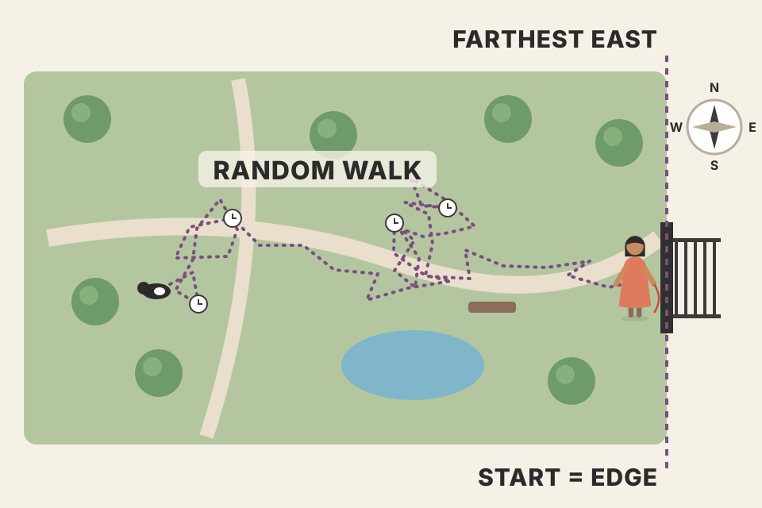
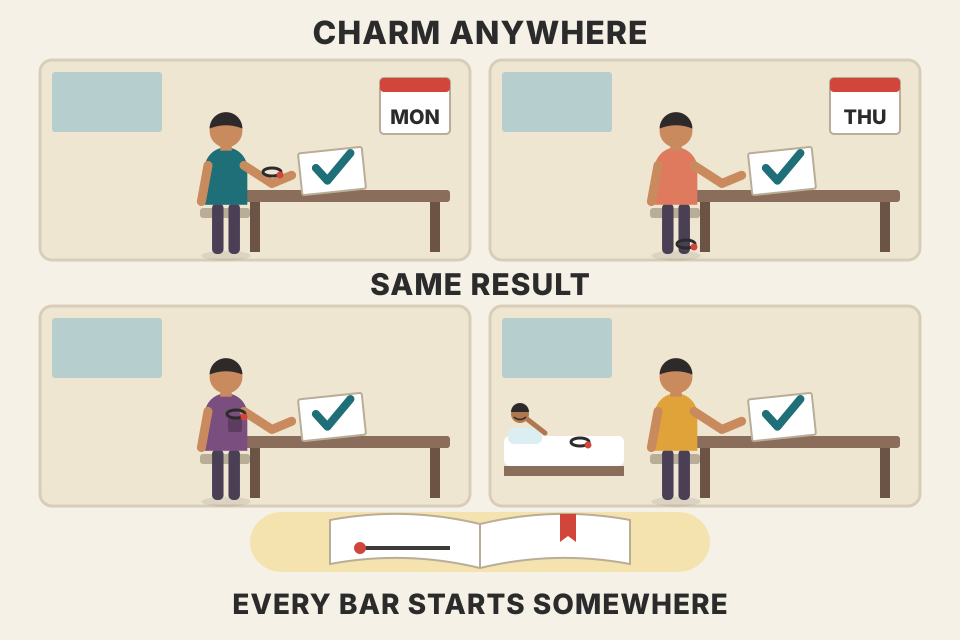
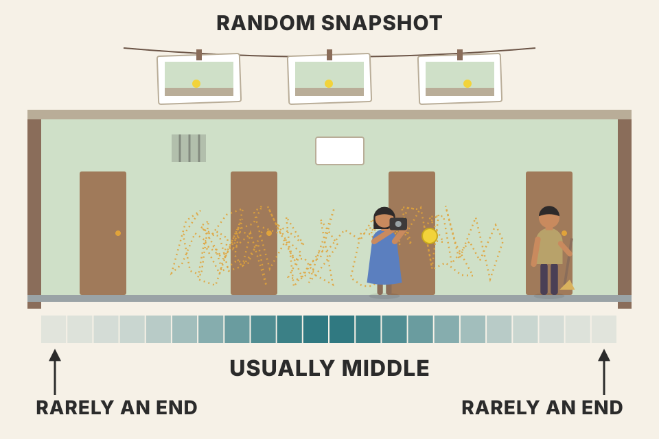
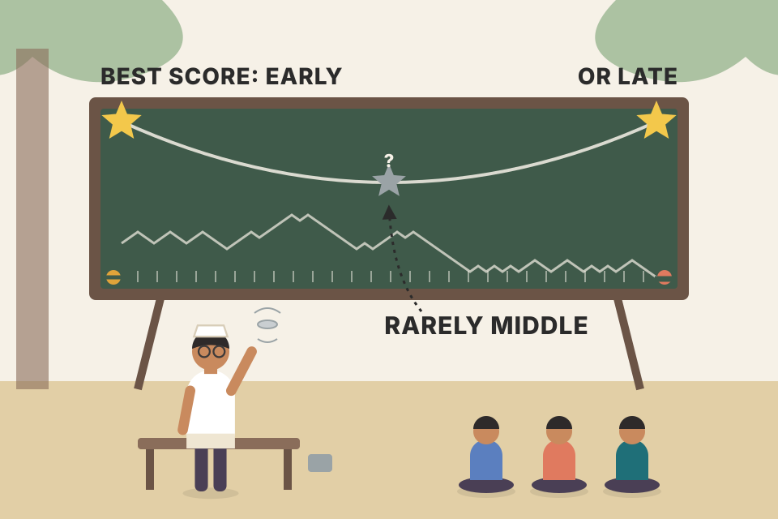

Traders keep noticing that the day's first price sits near the day's high or low far more often than "it should". Many take that as proof that markets are not random. Grimes shows that the proof is backwards: a purely random walk does exactly the same thing, because the open is not "just another tick". This page walks through his measure (O%Rng), his market tables, the random-tick test, the probability-cone intuition, the binomial tree, the random-walk and AR(2) simulations, and the arcsine law, with a live simulator for each. Every price path on this page is simulated: it shows a mechanism, it is not market evidence.
The chapter is one argument in six moves. It starts with a claim many traders make, measures the effect in real data, then builds up, step by step, the random-walk "baseline" that explains it.
The chapter opens with a line from Seneca about beginnings and endings, then goes straight to the opening range: the price range of the first stretch of a trading session. Many traders give it special weight, a habit Grimes traces to Toby Crabel's 1990 book Day Trading with Short Term Price Patterns and Opening Range Breakout. Grimes grants that there is good reason for it: profitable systems have been built on moves away from the open. And traders notice something that looks odd: the first print of the day is very close to the day's high or low much more often than seems natural.
Here is where he says traders and authors go wrong. From that odd-looking pattern, many conclude that markets do not move randomly. Grimes says this rests on a misunderstanding of how random walks behave. His aim is not to knock down any opening-range system. It is to study one property of random walks and show that random markets have surprising features. If you don't know them, you can draw false conclusions about the market and about your own edge.
His example of the flawed reasoning is from Fisher (2002). In my words, the argument goes:
Grimes then shifts the question. Traders are paid on price, not time, so where the open sits inside the day's range matters more than when the high or low prints. Knowing the open is likely to be within some percentage of the high or low is more useful than knowing the extreme comes in the first X minutes. And you can learn most of the same lesson from daily bars alone, without intraday data. That leads to his measure in Section 2.

A dog let off the lead at the park gate wanders randomly for an hour. Asked "in which of the 64 minutes-long chunks did it reach the farthest point east?", most people would say "any chunk, equally". But the gate is where the walk starts. If the dog's first few steps happen to go west, the gate may well stay the farthest-east point it ever reaches. The start of a random walk is a natural candidate for an extreme; a minute in the middle of the hour is not.
The simulator builds sessions of k intervals, each made of 10 random Gaussian steps with no drift, and counts how often the first interval contains the session's high, its low, or either. Fisher's "1/32" assumes the high is equally likely to land in any interval. For a random walk it is not: the time of the high follows the arcsine law that Grimes cites in Section 7, which piles probability at the start and the end of the session. The chance the high is in the first 1/k of the session is (2/π)·arcsin(√(1/k)). For k = 64 that is about 8%, not 1.6%, and high-or-low together comes to roughly 16–17%, right inside the 15–18% that Fisher called significant. Grimes does not do this calculation in the chapter; it is my application of the law he quotes. It is a pooled simulation of a pure random walk, not market data.
Notes/trading/intraday_swing_playbook.md (I-1) and strategies_by_timeframe.md already list this chapter as the book source for my 09:15–09:30 opening range breakout setup.Grimes calls his measure the Opening as percentage of Range, O%Rng:
Open is the price of the session's first tick; High and Low are the highest and lowest prices of the session. 100 means the day opened at its high, 0 at its low, 50 exactly in the middle. Figure 15.1 shows four daily bars of the U.S. Dollar Index with their values: 62.8, 20.7, 79 and 5.5 (the small tick on the left of a bar is the open). The chart below recreates the idea with simulated bars that have those same four values.
If the open "should" sit anywhere in the bar, then any tendency for opens to bunch up near the high or the low is what he calls opening skew.
Take a bar with high 77.38, low 76.55, open 76.60 (my numbers, in the style of the figure). Range = 77.38 − 76.55 = 0.83. Open above low = 76.60 − 76.55 = 0.05. O%Rng = 0.05 / 0.83 × 100 ≈ 6.0. The day opened in the bottom 6% of its range, so it counts towards the "bottom 5% or top 5%" bucket only if it were 5.0 or less; here it just misses. Change the boxes to try your own.
He paraphrases how opening-range writers argue. If markets were random walks, then:
| # | The traders' step | Why it fails (where the page shows it) |
|---|---|---|
| 1 | Any tick picked at random from the day should be equally likely to be anywhere in the day's range. | False for a random walk: a random tick clusters in the middle (Section 4). |
| 2 | The open is just another tick, so it too should be anywhere with equal chance. | False: the open is the start of the walk, and the start is special (Section 5). |
| 3 | In real markets the open is near the high or low much more often than in the middle, so markets are not random walks. | A random walk shows the same skew (Section 6), so the skew cannot prove non-randomness. |
| 4 | Because it's non-random, the open's position may offer profitable trades and shows the market is inefficient. | Not supported: the skew is fully consistent with randomness (Section 7). Any edge must come from something else. |
Grimes says every step sounds logical and intuitive, and every step is wrong: a case where a bad intuition about random walks leads to bad conclusions about markets.
O%Rng is a thermometer you hold against a bar: 0 at the floor, 100 at the ceiling. "Opening skew" is the claim that the thermometer reads near 0 or 100 more often than a flat, even spread would suggest.
O%Rng throws away the size of the bar and keeps only position. That makes bars of different markets and different volatility comparable, and it means the measure doesn't care about the price scale at all: multiply every price by 10 and O%Rng is unchanged. That fact matters later, because it means the volatility you put into a simulation (Grimes' σ = 0.5%) does not change the O%Rng result of a driftless walk; the shape of the steps and their number do.
Grimes starts with real data and works back to the random walk. The naive expectation: the top 5% and bottom 5% of a bar make up 10% of its range, so the open should land there 10% of the time. Table 15.1 counts how often O%Rng is ≤ 5 or ≥ 95:
| Sample (Table 15.1, as printed) | 5 ≥ O%Rng or O%Rng ≥ 95 | Sample size (bars) |
|---|---|---|
| Active markets, daily bars | 14.7% | 46,433 |
| Active markets, 60-minute bars | 18.1% | 139,616 |
| Active markets, 39-minute bars | 18.9% | 231,288 |
| AAPL, random intraday bars | 16.3% | 4,413 |
The order-flow story breaks down. Traders often explain the skew by market dynamics, such as order flow at the open. That is plausible for daily bars, maybe even 60-minute bars (would big funds really decide every hour? unlikely, he says, but possible). But a 39-minute bar has no reason to have its own "open" order flow. He jokes that if you checked whether 39 is a Fibonacci number, you go straight to jail. And the last row is the killer: Apple (AAPL) 2007–2010, cut into intraday bars of random length, each between 2 and 60 minutes. The skew is still well above 10%.
The "always works" warning. Opening-range writers have long said the pattern holds for any opening window: 5, 15, 60 minutes, weekly and monthly opening ranges, even odd weeks (Tuesday to Tuesday) or months tied to option or futures expiries. Grimes reads that as a clue, not a strength: when a result holds no matter what you change, first suspect an error in your thinking. The alternative belief, that the pattern is just that powerful, slides into magical thinking that proves itself. His analogy: a cure-all medicine that fixes every unrelated illness and can't harm you at any dose. No such medicine exists; a drug that can do no harm most likely does nothing. If random parameters give the same result, a random process is probably at work.
Figure 15.2 shows one random walk path with its maximum, minimum and open marked (in the book: open 1,000, max 1,019, min 959). The tests that follow repeat this thousands of times.
This is a driftless coin-flip walk of 300,000 ticks with no structure at all, cut into consecutive bars. There is no order flow and nothing special about any bar boundary, yet every bar length shows a skew above the dashed 10% line, and so do bars of random length. That is Grimes' point in miniature: if any slicing gives the effect, the slicing is not the cause. Notice also that the skew is bigger for shorter bars (fewer ticks inside a bar). With few ticks a bar is "lumpy", and the open lands exactly on the high or low more often. That fits his remark that intraday and illiquid data skew more, though he attributes the extra skew to trending (Section 6); the tick-count effect is my hypothesis, shown here only for a simulation.

If a "lucky charm" works whether you wear it on your wrist, ankle, or in your pocket, on Mondays or Thursdays, the charm is not doing the work. The thing that's always present is the cause: here, the fact that every bar starts somewhere.
backtest_results_summary.md shows the practical side: my 15-min ORB that worked on Nifty 50 lost in all 43 settings on Nifty 200, while the 5-min long + short version with RVOL ≥ 2 is only a lead. A real edge has to survive changes in universe and settings; a random-walk artefact will look "good" everywhere in-sample and pay nothing.First, the basic question behind step 1 of the traders' argument: in a random walk, is a randomly chosen tick equally likely to be anywhere in the range? Grimes tests it: run many paths through a binomial tree, record each path's range (Max − Min) and the value of one tick chosen at random, and plot where that tick sits in the range. Over 500,000 trials (Figure 15.3) the answer is clear: the random tick does not spread evenly. It forms an arch, piling up around the middle and thinning out towards both ends.
On reflection, he says, that's not surprising: a random walk spends more time near the middle of its range than at the edges. Real markets do the same. Tools that show volume inside each bar, MarketProfile being the best known, show that most sessions have one or more clusters of volume at certain prices; activity spread evenly across the whole range is extremely rare. Figure 15.4 (the first of two figures numbered 15.4 in this PDF) shows daily E-mini S&P 500 bars with lumpy volume profiles. If activity clusters, a random tick is most likely to fall in a cluster.

A ball bouncing randomly in a corridor: to touch either end wall it needs a long run of moves in one direction, which is rare. Most of the time it is somewhere in the middle, so a snapshot taken at a random moment usually catches it there.
The range of a path is defined by its two most extreme moments. Each extreme is touched briefly (often once), while the prices in between are visited again and again as the walk crosses back and forth. So the share of time spent within 5% of either edge is small. The pooled readout shows how small: in my simulation the random tick lands in the outer 10% of the range only a few percent of the time, well below the 10% an even spread would give. The bottom chart draws, for each simulated session, a sideways histogram of how many ticks were spent at each price: lumpy, with fat middles, like a market profile. (Simulated time-at-price, not real volume.)
Notes/trading/vwap_volume_profile_explained.md: the volume profile and its POC (the price with most volume) are this same clustering seen in real volume.You might object: "if random ticks sit in the middle, doesn't that make the open's edge-hugging even more special?" Grimes' answer: the mistake is assuming the open is like any other tick. It isn't.
The probability cone. Picture yourself at the top of a binomial tree (he suggests the edge of a ski slope) before the walk begins. The likely future is a fuzzy cone that starts where you stand. With no drift, the expected end point of a zero-mean random walk is the starting point, so the cone is centred on you: ending left or right is equally likely, and the middle is most likely. Take the first step, say to the right. The cone shrinks a little (one step fewer remains), and, more importantly, it moves right with you. Now you're more likely to stay to the right of the start than to cross back. A second step right shifts it further. Each shift is small, but over many trials they add up, like a slightly loaded coin winning a gambler a fortune. The first step sets the most probable future range, so the start is very special. He adds that thinking this way builds deep intuition about likely outcomes in many market situations.
The shaded bars at the right are the exact binomial chances of each final price given where the walk is now. Before any step, the chance of finishing above the open equals the chance of finishing below it. After one up-step the cone is centred one unit above the open, so the walk is more likely to end above the open than below it, and the open is more likely to stay near the low of the path. The readout computes exactly (by enumerating every remaining path) the chance that the walk never trades below the open again, i.e. that the open ends up as the low of the session. These are exact numbers for a coin-flip walk (my calculation, not from the book).
Count every path. Grimes then enumerates every path through a small tree (the second Figure 15.4). It starts at 10 and has four levels of nodes, labelled A; 1, 2; a, b, c; i, ii, iii, iv, so each path is three moves of ±1. The top end point (13) can only be reached by A-1-a-i; the next one (11) by A-1-a-ii or A-1-b-ii. For each path he records the start (always 10), the max, the min, and O%Rng (Table 15.2). The point: more paths put the open at an extreme than in the middle. He suggests repeating the exercise with more steps (an eight-step tree, say) to feel why; there are 2n paths for n steps, so it gets slow by hand. The tool below does it for you.
Path A-1-b-iii goes 10 → 11 → 10 → 9. Max 11, min 9, so O%Rng = (10 − 9)/(11 − 9) × 100 = 50. Path A-2-c-iii goes 10 → 9 → 8 → 9: max 10, min 8, O%Rng = (10 − 8)/(10 − 8) × 100 = 100. Of the 8 paths, 6 have the open exactly at an extreme (O%Rng 0 or 100) and only 2 in the middle (50). Set n = 3 above and the generated table matches Table 15.2 row for row. Slide n up: the share at the exact edge falls (more moves give more room to cross back), but the share within 5% of an edge stays well above 10%.
For the open to sit in the middle of the range, the walk must go both ways far enough: up by about as much as it goes down. For the open to sit at an edge, the walk only has to go one way and never come back past the start. "Never come back" is surprisingly common for a random walk, because the first move already tilts the odds.
Figure 15.5 shows O%Rng for real data (active markets, daily bars, N = 46,433): a U-shape, tall at 0 and 100, low and flat in the middle. It's easy to see why a trader would suspect a non-random force. And even accepting the tree argument, the size of the effect can seem too large to be a "slight statistical skew".
Table 15.3 repeats the market rows and adds two simulations: a random walk with equal-sized up and down steps of equal probability, and an AR(2) model.
| Sample (Table 15.3, as printed) | 5 ≥ O%Rng or O%Rng ≥ 95 | Sample size |
|---|---|---|
| Active markets, daily bars | 14.7% | 46,433 |
| Active markets, 60-minute bars | 18.1% | 139,616 |
| Active markets, 39-minute bars | 18.9% | 231,288 |
| AAPL, random intraday | 15.7% | 4,413 |
| Random walk model | 15.6% | 500,000 |
| Second-order AR model | 18.1% | ~100,000 |
(The AAPL row reads 16.3% in Table 15.1 but 15.7% here; both are shown as printed.) Real data puts the open in the outer 5% bands roughly 15–19% of the time. The random walk gives 15.6%, more than the 14.7% of active daily bars. Grimes calls this conclusive proof that the skew could come from a purely random process. His Figure 15.6 (random walk) is virtually indistinguishable from Figure 15.5 (real data).
Why some data skews even more. Illiquid markets and intraday bars often show skews near 19%, more than the simple random walk explains. One reason could be positive autocorrelation: prices trend. A pure random walk has no memory: after six up-steps, the next is still up with 50% chance. An autoregressive model "remembers" recent steps, so an up-step makes another up-step more likely. His AR(2):
Today's return is a constant plus fractions of the last two returns plus fresh normal noise. With positive β and γ, the first move tends to be followed by more of the same, which makes it less likely that price crosses back over the open. Those inputs gave the higher 18.1%. He notes this is only one possible returns process: heteroscedastic models (volatility that changes over time) and other distributions such as a mixture of normals can produce even bigger opening skews from random paths.
The book does not say how many steps each simulated session had, and the answer depends on it: a short walk has a "lumpy" range and hits 0 or 100 exactly very often, so its skew is high; a long walk approaches a smooth limit. The sweep shows this for the coin walk and for AR(2) with the book's β and γ. So I don't claim to reproduce 15.6% or 18.1% exactly; what does carry over is the shape (a U, like Figures 15.5 and 15.6) and the ordering: at every step count from 20 up (at 10 steps both sit near 50%), positive autocorrelation (β, γ > 0) raises the skew above the plain random walk. Set β = γ = 0 and the AR(2) becomes a plain Gaussian walk; make them negative (mean reversion) and the skew drops. σ is not a slider because O%Rng ignores price scale (Section 2): with α = 0, scaling every return by the same factor leaves every O%Rng unchanged. The GARCH-style and mixture options are my own illustrations of the model families he names, with parameters I picked; they are simulations, not evidence.
A walker who tends to keep going the way he just went (positive autocorrelation) wanders off from the start and rarely comes back past it. The start then ends up at one edge of his range even more often than for a walker with no memory.
Notes/trading/trading_equations.md collects time-series models (GARCH, mean reversion) used elsewhere in my notes; this chapter is a concrete use of them as a null model.Research often turns up things that are not what they first appear. Grimes' rule: always know what you would see if the market were completely random, and use that as the baseline for any tendency you find. Without that "what if it were all random" baseline, it is easy to be misled, and the opening skew is his example. Many traders still believe it can't come from a random process and offer it as proof of inefficiency, yet none of these results would surprise anyone trained in mathematics and stochastic processes.
Its graph looks just like the simulated and real distributions above. So this is a fully understood part of price behaviour. The open's distribution is completely consistent with random-walk price action: it is not evidence of inefficiency, and it doesn't offer easy profits. Grimes still notes there is good evidence that many traders, futures traders especially, trade off the opening range, and that some profitable systems use it. The lesson is to understand price movement and what drives it, not to drop the tool.
The curve is the book's f(t), rescaled so that T = 1. It is U-shaped and goes to infinity at both ends: the high is most likely to be set right at the start or right at the end of the session, and least likely in the middle. The histogram is the time of the high in simulated driftless sessions. Integrating f gives the cumulative chance (beyond the book, standard result): P(high within the first fraction x of the session) = (2/π)·arcsin(√x). At x = 50% that is exactly one half, as symmetry demands; at x = 10% it is about 20%, double the "fair share". The open sits at the very start of the time axis, so a high or low near the start puts the open near the high or low in price: the time picture and the O%Rng picture are two views of one fact.

Toss a fair coin all day and keep score. The arcsine law says the moment of your best score is most likely to be very early (you got lucky at once and never matched it) or very late (you climbed all day). "Somewhere in the middle" is, surprisingly, the least likely.
Notes/trading/intraday_swing_playbook.md I-1, backtest_results_summary.md): the opening range's edge-hugging is what random data does, so the breakout alone can't be the edge. If the 5-min long + short version keeps working net of costs, the credit should go to what it adds (the RVOL ≥ 2 "stock in play" filter, the exits), and the paper-trade test should check exactly that.(103 − 100)/(120 − 100) × 100 = 15. No: the bucket is O%Rng ≤ 5 or ≥ 95. (Section 2)
It assumes the open is spread evenly over the range. For a random walk it isn't: the open is the start of the walk, and the start tends to stay on one side of the path. Grimes' random walk gives 15.6%. (Sections 3, 6)
The 39-minute bars (18.9%) and AAPL cut into random 2–60 minute bars (16.3%). No order-flow story gives a special "open" to arbitrary or random bar boundaries, yet the skew is still there. (Section 3)
A result that holds no matter which parameters you choose. Like a drug that cures everything and can't harm at any dose, it most likely does nothing; a pattern that survives every tweak points to a random process or an error in the reasoning. (Section 3)
Near the middle (Figure 15.3's arch, 500,000 trials). The walk touches its extremes only briefly but recrosses the middle many times. Real markets show the same through clustered volume (MarketProfile). (Section 4)
With no drift, the expected end of a random walk is wherever it is now, so the cone of likely futures moves with each step. After the first step up, more of the future lies above the open than below, so the walk is more likely to stay above the open and leave it near the low. (Section 5)
The tree has four levels of nodes (A; 1–2; a–c; i–iv), which is three moves, and 2³ = 8 paths. Six of the eight have the open at an exact extreme (O%Rng 0 or 100). (Section 5, Table 15.2)
Positive autocorrelation: a move tends to be followed by another in the same direction, so price is less likely to cross back over the open. Grimes' run gave 18.1% vs 15.6%. (Section 6)
O%Rng is a ratio of price differences, so it ignores price scale. Scaling all returns by a constant scales open, high and low distances by the same factor (beyond the book reasoning). (Sections 2, 6)
Not necessarily. The skew depends on how many steps a session has: short walks often open exactly at the high or low. The book doesn't state its step count. Compare like with like. (Section 6 sweep)
P(high in the first fraction x of the session) = (2/π)·arcsin(√x). For x = 1/64: about 8% for the high alone, roughly 16% for high or low, against Fisher's 1/32 ≈ 3%. The pooled simulation in Section 1 agrees. (Sections 1, 7; the calculation is beyond the book)
No. Grimes says profitable systems use the opening range and many futures traders trade it. He only shows that the open's position is not, by itself, evidence of inefficiency or an easy edge. (Sections 1, 7)
His: positive autocorrelation (trending). Mine, as a hypothesis shown only in simulation: fewer trades per bar makes bars "lumpy", so the open lands exactly on an extreme more often. (Sections 3, 6)